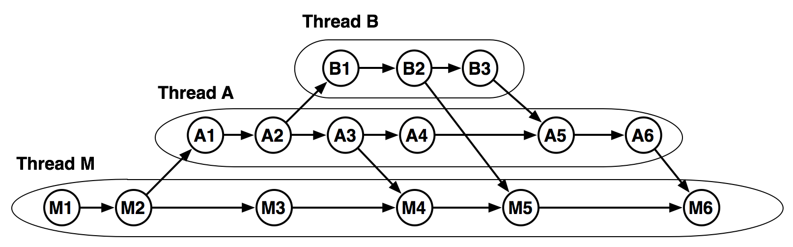
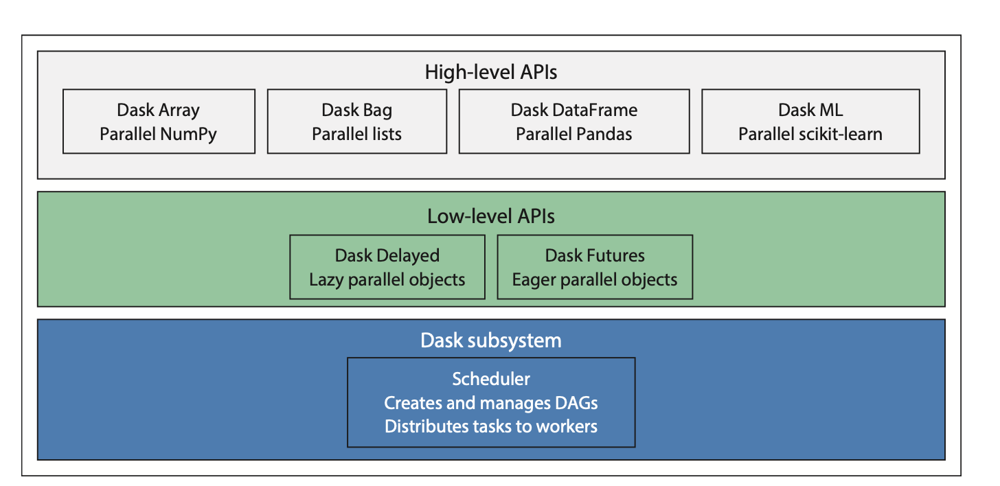
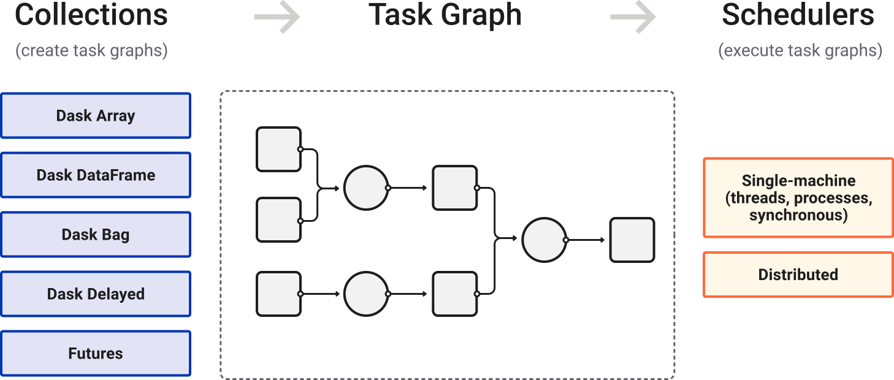

Big Data: Dask intro
Lviv University
Intro to DAGs and Dask
Program as DAG
Representation
A parallel program can be represented by a node- and edge-weighted directed acyclic graph (DAG), in which:
- node weights represent task processing times
- edge weights represent data dependencies as well as the communication times between tasks.
Program as DAG
Program as DAG
Generalization
Multithreaded computing can be viewed as a natural generalization of sequential computing in the following sense:
- in sequential computing, a computation can be defined as a totally ordered set of instructions, where the ordering corresponds to the sequential execution order;
- in multithreaded computing, a computation can be viewed as a partially ordered set of instructions (as specified by the DAG), where the instructions may be executed in any order compatible with the specified partial order.
Program as DAG
Ordering re-cap
A binary relation \(\preccurlyeq\) on some set \(X\) is called a partial order if \(\forall a,b,c \in X\) the following is true:
- Reflexivity: \(a \preccurlyeq a\)
- Transitiity: \(a \preccurlyeq b, b \preccurlyeq c \Rightarrow a \preccurlyeq c\)
- Antisymmetricity: \(a \preccurlyeq b, b \preccurlyeq a \Rightarrow a = b\)
If, additionally, \(\forall a,b \ in X\) either \(a \preccurlyeq b\) or \(b \preccurlyeq a\), then the order is total.
Program as DAG
Definitions
A parallel program can be represented by a directed acyclic graph (DAG) \[ G=(V,E), \]
where \(V\) is a set of \(v\) nodes and \(E\) is a set of \(e\) directed edges.
A node in the DAG represents a task which in turn is a set of instructions which must be executed sequentially without preemption in the same processor.
The weight of a node \(n_i\) is called the computation cost and is denoted by \(w(n_i)\).
Program as DAG
Definitions
The edges in the DAG, each of which is denoted by \((n_i,n_j)\), correspond to the communication messages and precedence constraints among the nodes.
The weight of an edge is called the communication cost of the edge and is denoted by \(c(n_i, n_j)\).
The source node of an edge is called the parent node while the sink node is called the child node.
A node with no parent is called an entry node and a node with no child is called an exit node.
The communication-to-computation-ratio (CCR) of a parallel program is defined as its average edge weight divided by its average node weight.
Program as DAG
Definition
Scheduling involves executing a parallel program by mapping the computation over the processors so that:
- completion time is minimized
- use of other resources such as storage as energy is optimal.
Program as DAG
Definitions
\(ST(n_i)\) and \(FT(n_i)\) denote start time and finish time at some processor.
After all the nodes have been scheduled, the schedule length is defined as \(\max_i\left\{FT(n_i)\right\}\) across all processors.
The goal of scheduling is to minimize \(\max_i\left\{FT(n_i)\right\}\).
Scheduling is done in such a manner that the precedence constraints among the program tasks are preserved.
Program as DAG
Program as DAG
Program as DAG

Program as DAG
Work
Work is defined as the number of vertices in the DAG.
Work of a computation corresponds to the total number of operations it performs.
Span
Span is the length of the longest path in the DAG.
Span corresponds to the longest chain of dependencies in the computation.
Work[make]span
The overall finish-time of a parallel program is commonly called the schedule length or makespan.
Scheduling
Scheduling
Taxonomy
Scheduling
Types
- Static: the characteristics of a parallel program (such as task processing times, communication, data dependencies, and synchronization requirements) are known before program execution
- Dynamic: a few assumptions about the parallel program can be made before execution, and thus, scheduling decisions have to be made on-the-fly.
Scheduling
Categories
- Job scheduling: independent jobs are to be scheduled among the processors of a distributed computing system to optimize overall system performance
- Scheduling and mapping: allocation of multiple interacting tasks of a single parallel program in order to minimize the completion time on the parallel computer system.
Scheduling model variations
Preemptive vs non-preemptive
- preemptive: execution of the task might be interrupted so that it’s allocated to a different processor
- non-preemptive: execution must complete on a single processor
Parallel vs non-parallel
Parallel task requires more than one processor for its execution.
With vs without conditional branches
In conditional model, each edge in the DAG is associated with a non-zero probability that the child will be executed immediately after the parent.
Scheduling
List scheduling
The basic idea of list scheduling is to make a scheduling list (a sequence of nodes for scheduling) by assigning them some priorities, and then repeatedly execute the following two steps until all the nodes in the graph are scheduled:
- Remove the first node from the scheduling list;
- Allocate the node to a processor which allows the earliest start-time.
Scheduling
Greedy Scheduler
We say that a scheduler is greedy if whenever there is a processor available and a task ready to execute, then it assigns the task to the processor and starts running it immediately. Greedy schedulers have an important property that is summarized by the greedy scheduling principle.
Greedy Scheduling Principle
The greedy scheduling principle postulates that if a computation is run on \(P\) processors using a greedy scheduler, then the total time (clock cycles) for running the computation is bounded by \[ T_P < \frac{W}{P} + S \] where \(W\) is the work of the computation, and \(S\) is the span of the computation (both measured in units of clock cycles).
Scheduling
Optimality of Greedy Schedulers
Firstly, the time to execute the computation cannot be less than \(\frac{W}{P}\) clock cycles since we have a total of \(W\) clock cycles of work to do and the best we can possibly do is divide it evenly among the processors. Secondly, the time to execute the computation cannot be any less than \(S\) clock cycles, because \(S\) represents the longest chain of sequential dependencies. Therefore we have \[ T_P \geq \max\left(\frac{W}{P},S\right). \] We therefore see that a greedy scheduler does reasonably close to the best possible. In particular, \(\frac{W}{P} +S\) is never more than twice \(\max\left(\frac{W}{P} ,S\right)\).
Scheduling algorithms
Scheduling algorithms
Scheduling algorithms
What’s a heuristic algorithm?
Algorithm used when classic methods are too slow for finding an exact or approximate solution, or when classic methods fail to find any exact solution in a search space.
This is achieved by trading
- optimality,
- completeness,
- accuracy,
- or precision
for speed.
In a way, it can be considered a shortcut.
Scheduling algorithms
List scheduling
A list-scheduling heuristic maintains a list of all tasks of a given graph according to their priorities. It has two phases:
- the task prioritizing or task selection phase for selecting the highest-priority ready task
- and the processor selection phase for selecting a suitable processor that minimizes a predefined cost function which can be the execution start time.
Features
- for a bounded number of fully connected homogeneous processors
- provide better performance results at a lower scheduling time than the other groups
Scheduling algorithms
Clustering
Maps the tasks to unlimited number of clusters. The selected tasks for clustering can be any task, not necessarily a ready task.
Each iteration refines the previous clustering by merging some clusters.
If two tasks are assigned to the same cluster, they will be executed on the same processor.
Scheduling algorithms
Clustering: Extra final steps
- a cluster merging step for merging the clusters so that the remaining number of clusters equal the number of processors
- a cluster mapping step for mapping the clusters on the available processors
- a task ordering step for ordering the mapped tasks within each processor
Scheduling algorithms
Guided random search
Guided random search techniques (or randomized search techniques) use random choice to guide themselves through the problem space, which is not the same as performing merely random walks as in the random search methods.
These techniques combine the knowledge gained from previous search results with some randomizing features to generate new results.
HEFT/CPOP
Definition
Heterogeneous earliest finish time (HEFT) is a heuristic algorithm to schedule a set of dependent tasks onto a network of heterogeneous workers taking communication time into account.
Critical-Path-On-a-Processor (CPOP) algorithm uses the summation of upward and downward rank values for prioritizing tasks.
HEFT/CPOP
Definitions
- \(V\) – set of \(v\) nodes
- \(E\) – set of \(e\) edges
- \(data\) – a \(v \times v\) matrix of communication data
- \(data_{i,k}\) – amount of data to be transmitted from \(n_i\) to \(n_k\)
- \(Q\) – set of \(q\) processors
- \(W\) – a \(v \times q\) computation cost matrix, in which each \(w_{i,j}\) gives the estimated execution cost to complete task \(n_i\) on processor \(p_j\)
- \(B\) – \(q \times q\) data transfer rates matrix
- \(L\) – \(q\)-dimensional vector of communication startup costs
HEFT/CPOP
Costs
Average execution cost: \[ \overline{w_i} = \sum\limits_{j=1}^q \frac{w_{i,j}}{q}. \] Communication cost of the edge \((i,k)\) for transfering data from task \(n_i\) scheduled on processor \(p_m\) to task \(n_k\) scheduled on processor \(p_n\): \[ c_{i,k} = L_m + \frac{data_{i,k}}{B_{m,n}} \] Average communication cost: \[ \overline{c_{i,k}} = \overline{L} + \frac{data_{i,k}}{\overline{B}} \]
HEFT/CPOP
Times
Earliest execution start time of task \(n_i\) on processor \(p_j\): \[ \begin{align*} & EST(n_{entry}, p_j) = 0, \\ & EST(n_i, p_j) = \max\left\{avail[j], \max\limits_{n_m \in pred(n_i)} (AFT(n_m)+c_{m,i})\right\}, \end{align*} \] where \(avail[j]\) is the earliest time at which processor \(p_j\) is ready for task execution.
Earliest execution finish time of task \(n_i\) on processor \(p_j\): \[ EFT(n_i, p_j) = w_{i,j} + EST(n_i,p_j) \]
After a task \(n_m\) is scheduled on processor \(p_j\), the earliest start time and the earliest finish time of \(n_m\) on processor \(p_j\) is equal to the actual start time \(AST(n_m)\) and the actual finish time \(AFT(n_m)\), respectively.
HEFT/CPOP
Workspan
After all tasks in the graph have been scheduled, the schedule length (makespan) will be equal to the actual finish time of the exit task \(n_{exit}\). In case of several exits: \[ makespan = \max \left\{AFT(n_{exit})\right\} \]
Definition
The objective function of the task scheduling problem is to determine the assignment of tasks to processors such that its makespan is minimized.
HEFT/CPOP
Upward rank
\[ \begin{align*} rank_u(n_i) = \overline{w_i} + \max\limits_{n_j \in succ(n_i)} \left(\overline{c_{i,j}} + rank_u(n_j)\right) \end{align*} \]
- \(succ(n_i)\) – set of immediate successors of \(n_i\)
- \(\overline{c_{i,j}}\) – average communication cost of edge \((i,j)\)
- \(\overline{w_i}\) – average computation cost of task \(n_i\)
\[ rank_u(n_{exit}) = \overline{w_{exit}} \]
HEFT/CPOP
Downward rank
\[ \begin{align*} rank_d(n_i) = \max\limits_{n_j \in pred(n_i)} \left(rank_d(n_j)+ \overline{w_j} + \overline{c_{j,i}}\right) \end{align*} \]
- \(pred(n_i)\) – set of immediate predecessors of \(n_i\)
- \(rank_d(n_{entry}) = 0\)
- can be thought of as the longest distance from the entry task to \(n_i\) without computation costs
HEFT/CPOP
HEFT
- Set the computation costs of tasks and communication costs of edges with mean values
- Compute \(rank_u\) for all tasks by traversing graph upward, starting from the exit task
- Sort the tasks in the scheduling list by non-increasing order of \(rank_u\) values
- while there are unscheduled tasks in the list do:
- select the task \(n_i\) from the scheduling list
- for each processor \(p_k\) in the processor set \(Q\) do:
- Compute \(EFT(n_i,p_k)\) using the insertion-based scheduling policy
- Assign task \(n_i\) to the processor \(p_j\) minimizing \(EFT(n_i, p_j)\)
HEFT/CPOP
CPOP
- Set the computation costs of tasks and communication costs of edges with mean values
- Compute \(rank_u\) for all tasks by traversing graph upward, starting from the exit task
- Compute \(rank_d\) for all tasks by traversing graph downward, starting from the entry task
- Compute \(priority(n_i) = rank_d(n_i) + rank_u(n_i) \; \forall n_i\)
- \(|CP| = priority(n_{entry})\)
- \(SET_{CP} = \{n_{entry}\}\), where \(SET_{CP}\) is a set of tasks on a critical path
- \(n_k \leftarrow n_{entry}\)
HEFT/CPOP
CPOP
- while \(n_k \neq n_{exit}\) do
- select \(n_j: n_j \in succ(n_k) \textbf{ and } priority(n_j) = |CP|\)
- \(SET_{CP} = SET_{CP} \cup {n_j}\)
- \(n_k \leftarrow n_j\)
- select \(p_{CP}\) minimizing \(\sum\limits_{n_i \in SET_{CP}} w_{i,j} \; \forall p_j \in Q\)
- initialize priority queue \(PQ\) with the entry task
HEFT/CPOP
CPOP
- while there are unscheduled tasks in the \(PQ\)do
- select the highest priority task \(n_i\) from \(PQ\)
- if \(n_i \ in SET_{CP}\) then
- assign \(n_i\) to \(p_{CP}\)
- else
- assign \(n_i\) to \(p_j\) minimizing \(EFT(n_i,p_j)\)
- update \(PQ\) with the successors of \(n_i\) if ready
HEFT/CPOP
HEFT/CPOP
HEFT - (a), CPOP - (b)
Dask Scheduling
Dask
Dask is a library to perform parallel computation for analytics. 
Scheduling
What does Dask scheduler do?
- execute DAGs on parallel hardware
- manage resource allocation across DAG nodes
Dask Scheduling
Dask Scheduler types
- Single-machine scheduler: This scheduler provides basic features on a local process or thread pool. This scheduler was made first and is the default. It is simple and cheap to use, although it can only be used on a single machine and does not scale
- Distributed scheduler: This scheduler is more sophisticated, offers more features, but also requires a bit more effort to set up. It can run locally or distributed across a cluster
DAG
Dask Scheduling
Scheduling
Notes
- Useful for debugging or profiling
- No parallelism at all
Scheduling
Notes
- Small overhead of 50 microseconds per task
- Only provides parallelism when executing non-Python code (because of GIL)
Scheduling
Notes
- Performance penalties when inter-process communication is heavy
- Can provide parallelism when executing Python code
Scheduling
Notes
- Can be more efficient than the multiprocessing scheduler on workloads that require multiple processes
- Diagnostic dashboard and async API
Scheduling
Notes
- Can be setup either locally, or e.g. on a pre-existing Kubernetes cluster
- Different cluster backends easy to swap
Scheduling
Issues
Issues
- Resource starvation
- Worker failures
- Data loss